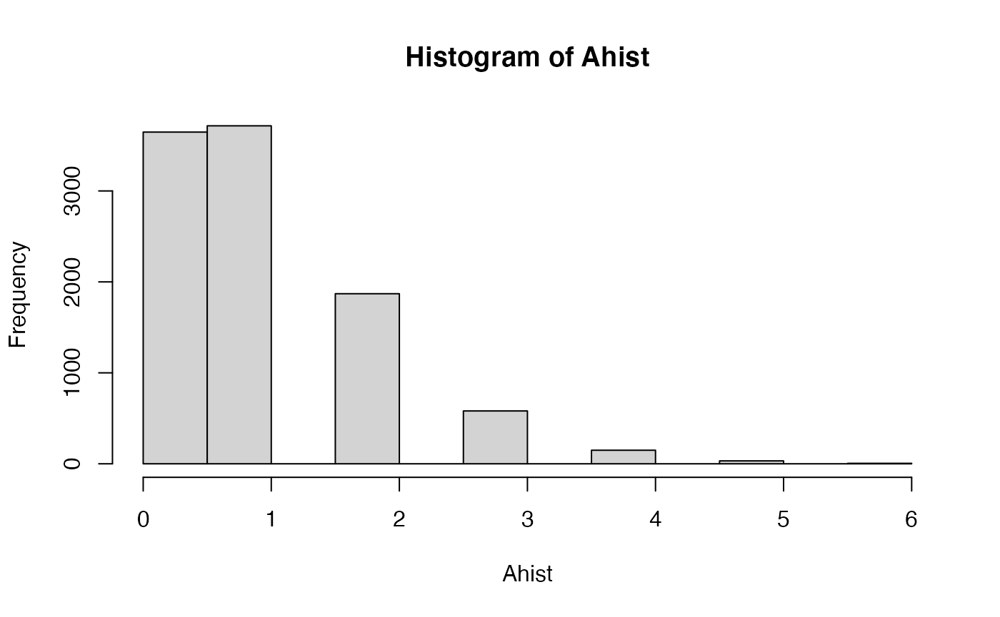
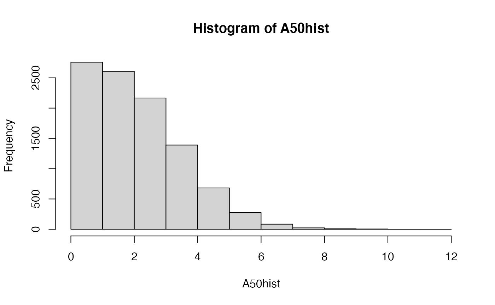
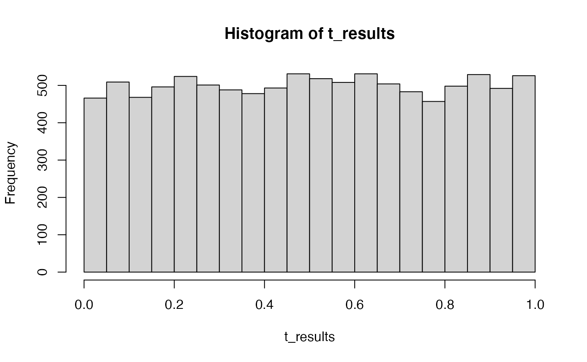
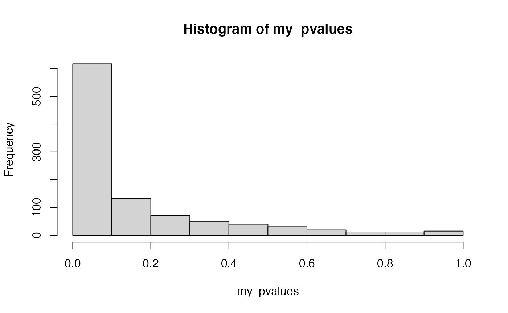

Lab6.Rmd1. Section 12.3.3 from your textbook refers to: The problem with replications of a meaningless experiment: ‘alpha and the captain’s age’. The issue here is that if you run an ineffectual experiment enough times you can always find a significant result by chance. The textbook mentions that if you repeat an experiment 20 times, you are guaranteed to find a significant result with .64 probability, and the probability is .92 if you repeat the experiment 50 times. 1a. Make use of the rbinom() function to show you can reproduce both probabilities. (1 point)
## ── Attaching packages ─────────────────────────────────────── tidyverse 1.3.1 ──## ✓ ggplot2 3.3.5 ✓ purrr 0.3.4
## ✓ tibble 3.1.6 ✓ dplyr 1.0.7
## ✓ tidyr 1.2.0 ✓ stringr 1.4.0
## ✓ readr 2.0.2 ✓ forcats 0.5.1## ── Conflicts ────────────────────────────────────────── tidyverse_conflicts() ──
## x dplyr::filter() masks stats::filter()
## x dplyr::lag() masks stats::lag()
length(Ahist[Ahist>0])/10000## [1] 0.6423The rate of making a type 1 error in this model for 20 subjects (/trials) is 0.6423 which is approximately equal to the textbook value of .64.

length(A50hist[A50hist>0])/10000## [1] 0.9215The rate of making a type 1 error in this model for 50 subjects (/trials) is 0.9215 which is approximately equal to the textbook value of .92.
1b. If the ineffectual experiment was conducted 20 times, and there were four groups, and the experimenter would accept a significant result from any of the orthogonal linear contrasts, what would be the probability of finding a significant result here? (1 point)
## [1] 0.9527The rate of making a type 1 error in this set up where notably no correction for multiple testing is performed is for 50 subjects (/trials) is 0.9527.
The next two questions draw a connection to a technique we have not yet discussed called p-curve analysis (Simonsohn et al., 2014; Wallis, 1942). P-curve analysis is sometimes used for purposes of meta-analyses to determine whether there is “good” evidence for an effect in the literature.
2. Consider that a researcher publishes a study showing a significant effect, p <. 05; but, in reality the researcher makes a type I error, and the manipulation did not cause any difference. If many other researchers replicated the study, what kind of p-values would they find? Use R to create a sampling distribution of p-values that would be expected in this situation. What shape does this distribution have? (2 points)
t_results <- replicate(10000,t.test(rnorm(10,0,1),rnorm(10,0,1),var.equal=TRUE)$p.value)
hist(t_results) Looks flat.
t_results <- replicate(10000,t.test(rnorm(20,0,1),rnorm(20,.5,1),var.equal=TRUE)$p.value)
hist(t_results)
length(t_results[t_results>0.05])/10000## [1] 0.6682This looks like an F distribution.
my_pvalues <- c()
for(i in 1:1000){
IV <- factor(rep(1:4,each=20))
DV <- c(rnorm(20,0.5,1),rnorm(20,0,1),rnorm(20,0,1),rnorm(20,0,1))
sim_data <- tibble(IV,DV)
c1 <- c(3, -1,-1,-1)
contrasts(sim_data$IV) <- c1
aov.out <- aov(DV~IV, sim_data)
save_results <- summary.aov(aov.out, split = list(IV=list("c1" =1)))
my_pvalues[i] <- save_results[[1]]$`Pr(>F)`[2]
}
hist(my_pvalues)
omnibus_pvalues <- c()
contrast_pvalues <- c()
for(i in 1:10000){
IV <- factor(rep(1:4,each=20))
DV <- c(rnorm(20,0,1),rnorm(20,0,1),rnorm(20,0,1),rnorm(20,0,1))
sim_data <- tibble(IV,DV)
c1 <- c(3, -1,-1,-1)
contrasts(sim_data$IV) <- c1
aov.out <- aov(DV~IV, sim_data)
save_results <- summary.aov(aov.out, split = list(IV=list("c1" =1)))
omnibus_pvalues[i] <- save_results[[1]]$`Pr(>F)`[1]
contrast_pvalues[i] <- save_results[[1]]$`Pr(>F)`[2]
}Close to the same! 5.14% of the time you will make type 1 error in this design for omnibus versus 5.12% of time for contrast.